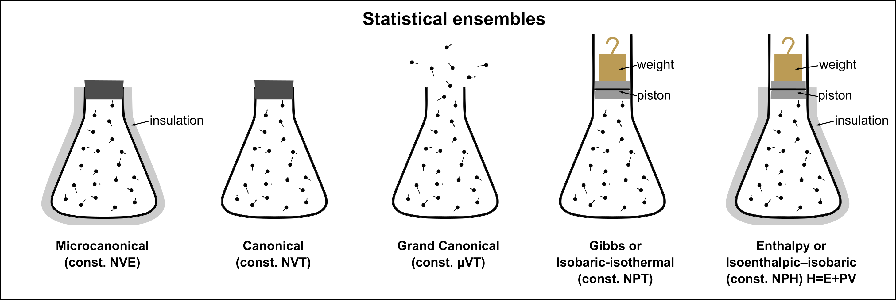

Intro to Statistical Ensembles#
What you will learn
Statistical Ensembles: Understanding the role of ensembles in statistical mechanics and how they describe macroscopic systems using probability distributions.
Microcanonical Ensemble (NVE): Definition, characteristics, and assumptions—fixed energy, volume, and particle number; statistical weight of microstates.
Canonical Ensemble (NVT): Definition and significance—fixed temperature, volume, and particle number; derivation of the Boltzmann factor.
Equivalence of Ensembles: Conditions under which the microcanonical and canonical ensembles give equivalent thermodynamic predictions in the thermodynamic limit.
Partition Function (\(Z\)): Role of the partition function in statistical mechanics, its connection to thermodynamic properties (free energy, entropy, internal energy).
Boltzmann Distribution: Probability of a system being in a given energy state at equilibrium, leading to macroscopic observables.
Thermodynamic Connections: How ensemble averages link to macroscopic properties such as energy, entropy, and pressure.
Fluctuations and Large System Limits: How energy fluctuations in the canonical ensemble become negligible for large systems, reinforcing ensemble equivalence.

Microcanonical Ensemble (NVE)#
A collection of all possible microscopic arrangements consistend with an equilibrium thermodynamic state is called statistical ensemble.
Ensemble defines sample space over microstates over which we define micro and macro-state probabilities
Consider an isolated fluid system with \(N=const\), \(V=const\) and \(E=const\). This is called a microcanonical ensemble
In the absence of any physical constraints, no micro state is more probable than any other. This is known as “principle of equal a priory probability”.
A priori equal probability of microstates with energy \(E\)
\(i=1,2,3,...\) distinct configurations or microstates with energy \(E\)
We can use postulate of equal mircro-state probabilities and plug into probabilisti expression of entropy to obtain a simple relationship between number of microstates and entropy:
Entropy in microcanonical ensemble (Boltzmann equation)
\(\Omega\) is the number of micro-states consistent with a macrostate of our system.
\(S(N, V, E)\) is the entropy of an isolated system.
\(k_B =1.380649\cdot 10^{-23} J/K\), Boltzmann’s constant
Simple example of NVE ensemble
Consider a system of three spins where \(\uparrow\) and \(\downarrow\) have the same energy \(\epsilon\). We have microcanonical ensemble defined by \(N=3\) and \(E=3\epsilon\) thermodynamic variables.
There are \(\Omega = 2^3\) microstates with entropy being:
For N spins we see that \(\Omega=2^N\) and therefore entropy scales linearly with system size \(N\)
Microcanonical partition function grows exponentially with system size#

To estimate how the number of microstates behave as a function of system size \(N\) consider \( N \) particles in a volume \( V \), let the particle density be \(\rho = \frac{N}{V}\)
Dividing the system into \( M \) statistically independent subregions of volume \( v = V/M \), with \( \Omega_{\text{sub}}\) microstates in each we get:
We find that number of mirostates grows exponentially with syste size \(N\). This implies a large deviation property: entropy scales extensively and grows monotonically with energy.
Large deviation propery of \(\Omega\)
\(s(E/N)\) is an intensive quantity of entropy per-particle.
\(S(E)\) is an extensive quantity of total entropy of N partice system.
Applications of NVE#
Particles in a box#
For a single quantum particle in a cubical box of side \( L \), the allowed energy levels are:
Where \( n_x, n_y, n_z \) are positive integers (quantum numbers).
To determine the number of microstates with total energy at most \( E \), we count the number of allowed quantum states \( (n_x, n_y, n_z) \) satisfying:
For large \( E \), this corresponds to counting integer lattice points inside a sphere of radius:
Since the number of points inside a sphere scales approximately as the volume of the sphere, we get:
Thus, for a single particle, the number of accessible microstates grows as:
For \( N \) independent particles, each particle contributes an independent set of quantum numbers, meaning we now count lattice points in a \( 3N \)-dimensional hypersphere.
Show code cell source
# Create a combined figure
fig = plt.figure(figsize=(14, 6))
# ---------------- Plot 1: Scaling of Microstates ----------------
ax1 = fig.add_subplot(131)
E = np.linspace(1, 10, 200)
N=10
Omega = E**(1.5 * N)
ax1.plot(E, Omega, label=f"N = {N}", color='black', lw=3.5)
ax1.set_xlabel("Energy E")
ax1.set_ylabel(r"$\Omega(E) \sim E^{\frac{3N}{2}}$")
ax1.set_title("Scaling of $\Omega(E)$")
ax1.set_yscale('log') # Logarithmic scale to better display the exponential growth
ax1.grid(True, linestyle='--', alpha=0.7)
ax1.legend()
# ---------------- Plot 2: Growth of Quantum States in 2D ----------------
ax2 = fig.add_subplot(132)
n_max = 15 # Reduce max quantum number for clarity
R_values = [5, 10, 15]
n_x_values = np.arange(1, n_max + 1)
n_y_values = np.arange(1, n_max + 1)
for n_x in n_x_values:
for n_y in n_y_values:
energy = n_x**2 + n_y**2
if energy <= max(R_values)**2:
ax2.scatter(n_x, n_y, color='black', s=10)
theta = np.linspace(0, 2 * np.pi, 300)
for R in R_values:
ax2.plot(R * np.cos(theta), R * np.sin(theta), label=f'R = {R}', linewidth=1.5)
ax2.set_xlabel(r'$n_x$')
ax2.set_ylabel(r'$n_y$')
ax2.set_title('Quantum States Growth (2D)')
ax2.legend()
ax2.set_xlim(0, n_max)
ax2.set_ylim(0, n_max)
ax2.grid(True, linestyle='--', alpha=0.5)
ax2.set_aspect('equal')
# ---------------- Plot 3: 3D Representation of Quantum States ----------------
ax3 = fig.add_subplot(133, projection='3d')
n_max_3d = 10 # Reduce quantum number range for clarity
# Generate 3D quantum states
n_z_values = np.arange(1, n_max_3d + 1)
for n_x in np.arange(1, n_max_3d + 1):
for n_y in np.arange(1, n_max_3d + 1):
for n_z in np.arange(1, n_max_3d + 1):
energy = n_x**2 + n_y**2 + n_z**2
if energy <= max(R_values)**2:
ax3.scatter(n_x, n_y, n_z, color='black', s=5)
ax3.set_xlabel(r'$n_x$')
ax3.set_ylabel(r'$n_y$')
ax3.set_zlabel(r'$n_z$')
ax3.set_title('Quantum States Growth (3D)')
ax3.view_init(elev=20, azim=45)
# Show the combined figure
plt.tight_layout()
plt.show()
Two state system#
Given \(N\) non-interacting spins where each spin can be up (\(\uparrow\)) with energy \( \epsilon \) or down (\(\downarrow\)) with energy \( 0 \). The total energy is:
\[ E = n\epsilon \]Determine fraction of excited states \(f=\frac{n}{N} = \frac{E}{N\epsilon}\) where \(n\) is number of up spins. Show how this fraciton changes with temperature
Using Striling’s approximation \(logN!=NlogN-N\) we get:
We connect number of excited states to equilibrium temperature via thermodynamics
The fraction would therefore be:
This is the well-known Boltzmann factor result for a two-level system in thermal equilibrium.
This means that at high temperatures (\( k_B T \gg \epsilon \)), approximately half the particles are excited, while at low temperatures (\( k_B T \ll \epsilon \)), the fraction of excited particles is exponentially suppressed.
Show code cell source
import numpy as np
import scipy.special as sp
import matplotlib.pyplot as plt
# Create a figure with two subplots
fig, axes = plt.subplots(1, 2, figsize=(14, 6))
# Subplot 1: Growth of Ω(E) with Energy for Different Spin System Sizes
N_values = [10, 20, 50] # Different spin system sizes
for N in N_values:
energies = np.arange(0, N+1, 1) # Possible energy levels
multiplicities = sp.binom(N, energies) # Compute binomial coefficient
axes[0].plot(energies, multiplicities, label=f'N = {N}', linestyle='-', marker='o')
# Plot settings for first subplot
axes[0].set_yscale('log') # Use logarithmic scale to highlight exponential growth
axes[0].set_xlabel(r'Total Energy $E$')
axes[0].set_ylabel(r'$\Omega(E)$ (Number of Microstates)')
axes[0].set_title(r'Growth of $\Omega(E)$ with Energy')
axes[0].legend()
axes[0].grid(True, which='both', linestyle='--')
# Subplot 2: Fraction of Particles in the Excited State vs. Temperature
epsilon = 1.0 # Set energy scale to 1 for simplicity
k_B = 1.0 # Boltzmann constant set to 1 for simplicity
T_values = [0.5, 1.0, 2.0, 5.0] # Different temperature values
# Define function for fraction of excited particles
def fraction_excited(beta_epsilon):
return 1 / (1 + np.exp(beta_epsilon))
# Generate beta_epsilon values
beta_epsilon_values = np.linspace(0, 5, 100)
# Plot f for different temperatures
for T in T_values:
beta_epsilon = epsilon / (k_B * T) * beta_epsilon_values
f_values = fraction_excited(beta_epsilon)
axes[1].plot(beta_epsilon_values, f_values, label=f"T = {T}")
# Plot settings for second subplot
axes[1].set_xlabel(r"$\beta \epsilon$")
axes[1].set_ylabel(r"Fraction of Excited Particles $f$")
axes[1].set_title("Fraction of Particles in the Excited State")
axes[1].legend()
axes[1].grid(True, linestyle='--')
# Adjust layout
plt.tight_layout()
plt.show()
Energy partitioning in an isolated system#

\( \Omega(E) \) is the number of microstates available to the system when it has energy \( E \).
\( \Omega_r(E_t - E) \) is the number of microstates available to the reservoir when the system has energy \( E \).
\( \Omega_t(E_t) \) is the total number of microstates
Since reservoir and system can be considered statistically independent, the probability of finding system in a macrostate with energy \(E\) is:
\[ p(E) = \frac{\Omega(E) \Omega_r(E_t - E)}{\Omega_t(E_t)} \]This is a ration of all microstate where system gets \(E\) and reservoir \(E_t-E\) energies divided by total number of microstates. The latter given as sum of all possible partitionings of energy
\[ \Omega_t(E_t) = \sum_E \Omega(E) \Omega_r(E_t - E) \]We can see that probability of macrostates is normalized \(\sum_E P(E)=1\). The system is more likely to be in a macrostate \( E \) if there are more microstates that reaalize this partitioning.
To find the most likely partitioning of energy we seek to find maximum of \(P(E)\)
Show code cell source
# Re-import necessary libraries since execution state was reset
import numpy as np
import matplotlib.pyplot as plt
# Define different system sizes
system_sizes = [(5, 10), (10, 20), (20, 40)]
# Define total energy
E_total = 5
# Create figure
plt.figure(figsize=(7, 6))
# Loop over different system sizes and plot
for N1, N2 in system_sizes:
# Define energy range for system 1 (from 0 to E_total)
E1_values = np.linspace(0.01, E_total, 50) # Avoid E=0 to prevent singularities
E2_values = E_total - E1_values # Energy remaining for system 2
# Compute microstates using Omega(E) ~ E^(3N/2)
Omega1 = E1_values**(3 * N1 / 2)
Omega2 = E2_values**(3 * N2 / 2)
# Compute total number of microstates (product of subsystems)
Omega_total = Omega1 * Omega2 / np.sum(Omega1 * Omega2) # Normalize to get probability
# Plot results
plt.plot(E1_values, Omega_total, label=rf'$N_1={N1}, N_2={N2}$')
# Draw vertical line at the peak (mean energy E = U)
E_peak = E1_values[np.argmax(Omega_total)]
plt.axvline(E_peak, color='black', linestyle=':', linewidth=2)
# Plot settings
plt.xlabel(r"Energy given to System: $E_1$")
plt.ylabel(r"$P(E_1)$")
plt.title("Probability Distribution of Energy Partitioning")
plt.legend()
plt.grid(True)
# Show plot
plt.show()
Energy fluctuations are Gaussian#
Since system consits of sum of statistically independent blocks or particles we expect that a system in equilibrium with a heat bath at temperature \(T\) follows a Gaussian distribution around average energy \(U\)
Temperature as the driver of energy partitioning#
Which paritioning is most likely? For two systems exchanging energy we can write down probability of macrostate and find its maxima with respect to \(E\)
Since \(logP(E)\sim S(E)+S_r(E-E_t)\) we note that Maximizing probability of a macrostate is the same as maximizing entropy of macrostate!
We also come to appreacite that temperature or more precisely, inverse temperature \(\beta\), quantifies growth of microstates with energy
Inverse Temperature \(\beta\)
Thermal equilirbium in ideal gasses#
If we use \(\Omega \sim E^{3/2N}\) for non-interacting particles in a box:
Using definition of entropy we get the most probable value of energy \((U_1)\) corresponding to the equilibirum state
We arrive at the well known result from theory of gasses that each degree of freedom of particle gets \(\frac{1}{2}k_BT\) thermal energy
Constant temperature ensemble (NVT)#
MaxEnt approach to canonical distribution
We can use Maximizing Entropy principle to assing probabilities for an esnemble where we have a physical constraint placed on having fixed average energy \(\langle E\rangle =U\)
Probability of each microstate is now weighted by an exponential of microstate Energies:
Probability of each macrostate containing \(\Omega(E)\) number of microstates would be:
By comparing with thermodynamics we can confirm that lagrange coefficinet is inverse temperature \(\beta=\frac{1}{k_BT}\)
Canonical distribution#
We can also see why exponential distribution emerges from microcanonical ensemble by using the fact that reservoir is much larger than the system \( E \ll E_t \),
Since log of microstates (entropy) is a smooth function we can Taylor expension around \(E_t\)
\[log\Omega_r(E_t-E) \approx log\Omega_r(E_t) - \bigg(\frac{\partial log \Omega_r}{\partial E} \bigg) E = const - \beta E\]Where the first factor is a constant independent of energy and reservoir influence is now described by temperature only! \(\beta = \frac{dlog\Omega}{dE}=\frac{1}{k_BT}\)
We find that number of microstates of a large reservoir decrease exponentially when the system borrows energy \(E\)
Boltzmann distribution (NVT)
Probability of a Macrostate
Probability of a Microstate
Partition Function
Partition Functions and Thermodynamic limit#
The number of states grows exponentially with system size \( N \), \( \Omega(E) = e^{\frac{S}{k_B}} \sim e^{N}\) while the Boltzmann factor decays exponentially with energy \(e^{-\beta E} \sim e^{-N}\)
These competing exponential behaviors determine the dominant contribution to the partition function.
In the thermodynamic limit (large \( N \) and \( V \)), only energies that significantly contribute to \( Z \) survive.
This allows replacing sum or integral by a single term.
Legendre vs Laplace Transoforms
\( U = \langle E \rangle \) is the average energy, with fluctuations of order \( O(N^{1/2}) \).
\( F = U - TS \) is the Helmholtz free energy.
We find that \(\Omega\) and \(Z\) are related by Laplace Tranform and energy \(E\) and free energy \(F\) via Legendre transform
Show code cell source
import numpy as np
import matplotlib.pyplot as plt
# Define energy range
E = np.linspace(0, 10, 100)
# Define parameters
beta = 1.0 # Inverse temperature (1/kT)
# Compute the Boltzmann factor
Boltzmann_factor = np.exp(-beta * E)
# Increase the entropy prefactor to shift the peak to the right
S_prefactor_new = 2.5 # Larger prefactor makes entropy increase faster
# Recalculate entropy and probability density
S_new = S_prefactor_new * np.log(1 + E)
Probability_density_new = np.exp(S_new) * Boltzmann_factor
# Create the updated plot
plt.figure(figsize=(8, 6))
# Plot entropy (scaled for visualization)
plt.plot(E, S_new / max(S_new), label=r"Entropy $S(E)$ (scaled)", color="blue", linestyle="--")
# Plot Boltzmann factor (scaled for visualization)
plt.plot(E, Boltzmann_factor / max(Boltzmann_factor), label=r"Boltzmann Factor $e^{-\beta E}$ (scaled)", color="red", linestyle="--")
# Plot updated probability density (product of both)
plt.plot(E, Probability_density_new / max(Probability_density_new), label=r"Probability Density $\Omega(E) e^{-\beta E}$", color="black")
# Highlight new peak region
E_peak_new = E[np.argmax(Probability_density_new)]
plt.axvline(E_peak_new, color="green", linestyle=":", label="New Peak Region")
# Labels and title
plt.xlabel("Energy $E$")
plt.ylabel("Scaled Functions")
plt.title("Shifted Peak: Entropy Growth, Boltzmann Factor Decay, and Probability Density")
plt.legend()
plt.grid(True, linestyle="--", alpha=0.6)
# Show plot
plt.show()
Examples of using NVT#
non-interacting spins
Consider three spins where up and down orientations have equal energy \(\epsilon\).
Show that sum over microstates and sum over macrostates leads to same expression of parition function.
Write down free energy for the system and identify entropic and energetic parts.
Solution
Sum over macrostates
Sum over microstates
Since each spin is independent, \(E=E_1+E_2+E_3\) the sum factorizes!
Each sum runs over the two possible spin orientations (\(\uparrow\), \(\downarrow\)), both of which have the same energy \( \epsilon \), so:
Thus, for three spins:
Free energy
Two-state partciles (NVT)#
Consider a simple two-level system where lower level has energy \(0\) and upper level \(\epsilon\). Determine how the fraction of excited states \(f=\frac{n}{N}\) changes with temperature.
Solving a two-state particle system in an NVT ensemble is much easier because the partition function decouples into single particle contributions.
We obtained same expression we got when using NVE but it tooks us less number of steps!
Free energy and macrostate probabilities#
Microstates: The relative population of microstates is dictated by the ratio of Boltzmann weights which depends on energy difference \(\Delta E\)
Macrostates: Probability of macrostates with energy \(E_A\) is obtained by summing over all microstates with energy E_A or simply by multiplying by \(\Omega_A\). The latter is related to entropy, which ends up turning the numerator into the free energy of a macrostate \(A\): \(F_A = E_A-TS_A\)
The relative population of macrostates is dictated by the ratio of entropic term times Boltzmann weights which depends on free energy difference \(\Delta F\)
Exercise
Consider state A has 3 energy levels \(0, \epsilon, 2\epsilon\) and state B has four energy levels with \(0, 2\epsilon, 3\epsilon, 4\epsilon\)
For state B all excited states have degenercy of 10.
Compute how probability of state A vs B changes with temperature.
Energy Fluctuations#
The probability of the system being in microstate i is given by the Boltzmann distribution:
The ensemble average energy can be related to the derivative of log of partition function:
Moments of Energy in NVT ensemble
Fluctuation-response and ensemble equivalence#
We can now show that heat capaicty is related to energy fluctuations a result known as fluctuation-response theorem
Fluctuation-Response Theorem
The probability distribution of energy, \(P(E)\), follows a Gaussian distribution in equilibrium:
\[ P(E) \propto \exp\left(-\frac{(E - \langle E \rangle)^2}{2 k_B T^2 C_V} \right) \]Relative energy fluctuations decrease with \(N\). In the thermodynamic limit \(N\rightarrow \infty \), fluctuations become negligible, justifying ensemble equivalence.
\[ \frac{\sigma_E}{\langle E \rangle} \sim \frac{C_V^{1/2}}{\langle E \rangle} \sim O(N^{-1/2}) \]
More Examples of using statistical Ensembles#
Exercise: Random polymer chain
Consider 1D polymer where \(N\) monomers are randomly oriended with \(+l\) and \(-l\) orientation along the \(x\) axis.
Microcanonical ensmeble here is defined as all possible microstates given fixed value of end to end distance \(X\) of this polymer.
Compute entropy \(S(X)\) and argue that if polymer length is free to move most likely configuraiton would be where the polymer remains compact with nearly equal numbers of \( +l \) and \( -l \) orientations.
Solution
We consider a 1D polymer consisting of \( N \) monomers, where each monomer can be oriented either in the \( +l \) or \( -l \) direction along the \( x \)-axis. The total end-to-end distance of the polymer is given by:
where \( s_i = \pm 1 \) represents the orientation of the \( i \)th monomer.
Microcanonical Partition Function
The total number of microstates corresponding to a given end-to-end distance \( X \) is determined by the number of ways to distribute \( N_+ \) monomers in the \( +l \) direction and \( N_- \) monomers in the \( -l \) direction, such that:
Solving for \( N_+ \) and \( N_- \),
The number of microstates corresponding to a given \( X \) is given by the binomial coefficient:
For large \( N \), we approximate using Stirling’s approximation:
Entropy Calculation
Using Stirling’s approximation and expressing \( N_+ \) and \( N_- \) in terms of \( X \),
To simplify, define the normalized displacement \( x = X / (N l) \)
For small \(x\), we can approximate using a Taylor expansion:
Thus, the entropy has a maximum at \(X = 0 \), meaning the most probable configuration is one where the polymer remains compact with nearly equal numbers of \( +l \) and \( -l \) orientations.
This shows a decrease in entropy as the polymer is more stretched (\(|X|\) increases), reflecting fewer accessible configurations.
Problems#
Shottky defects#
Schotky defects are vacancies in a lattice of atoms. Creating a single vacancy costs an energy \(\epsilon\). Consider a lattice with \(N\) atoms and \(n\) vacacnies. In this model the total energy is solely a function of defects: \(E=n\epsilon\)
Write down number of states and compute the entropy via Boltzmann formula. Plot number of states as a function of energy. You can use log of number of states for plotting.
Compute how the temperature would affect the fraction of vacancies on the lattice. Plot fraction of vacancies as a function of temperature.
How would the total energy depend on temperature \(T\). Derive expression for the high temeprature limit (\(\frac{\epsilon}{k_b T} \gg 1\)).
Plot total energy as a function of temperature E(T)
Lattice gas#
Consider a lattice gas of N particles distributed among V cells (with \(N\geq V\)). Suppose that each cell may be either empty or occupied by a single particle. The number of microscopic states of this syste will be given by:
Obtain an expression for the entropy per particle \(s(v)=\frac{1}{N} \cdot S(N,V)\) where \(v=\frac{V}{N}\).
From this simple fundamental equation, obtain an expression of equation of state \(p/T\).
Write an expansion of \(p/T\) in terms of density \(1/v\). Show that the first term gives Boyle law of ideal gases.
Sketch a graph of \(\mu/T\), where \(\mu(\rho)\) is a chemical potential as a function of density. Comment on \(\rho\rightarrow 0\) and \(\rho\rightarrow 1\) limits.
Polymer Elasticity#
Solve the problem 2.7 from the book.